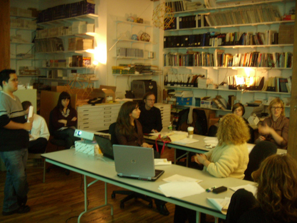

Welcome to Vol. 10 No. 1 of Design Science News, the e-bulletin of the Buckminster Fuller Institute
Design Science News brings you news from around the world related to humanity’s option for success and comprehensive design science. It also features updates from BFI and periodic special offers for our members.Thank you for supporting the Buckminster Fuller Institute!
Thank you to our members and supporters who have contributed over the past several weeks, your support is invaluable! However, we are still $10,000 short of our goal for the year. If you haven’t contributed yet, please consider making a donation - in any amount - today.Many, many thanks!
In partnership,
Elizabeth Thompson
Executive Director
BFI.org under the microscope
Pratt Institute’s Usability Leadership students presented the findings of their semester-long study of BFI.org on Tuesday, December 16th, providing us with great recommendations about how to evolve the site to better serve our readers and members. We are looking forward to implementing many of their recommendations over the course of 2009 and beyond.
We also want to know what you think. If there are any tools, features, or content you would like to see on BFI.org please let us know. Send your suggestions to designsciecenews (at) bfi (dot) org.
Buckminster Fuller on economic turmoil and social revolution
An excerpt from Grunch of Giants by R. Buckminster Fuller:Greater justice and economic improvement for the many is not always the result of social revolution. The Europeans’ guns overwhelming of the American Indian bow-and-arrow weapons was in most ways a retrogressive social revolution implemented by design-science revolution. It is always the design revolution that tips the social scales one way or the other. However, sum totally the combined design and social revolutions ultimately favor the many. Between 1900 and today, 60 percent of humans in the U.S.A. have attained a standard of living far in advance of those of the greatest potentates of 1900 while concurrently doubling the life-span of that fortunate 60 percent.
Never before in all history have the inequities and the momentums of unthinking money-power been more glaringly evident to so vastly large a number of now literate, competent, and constructively thinking all-around-the-world humans. There’s a soon-to-occur critical-mass moment when the intuition of the responsibly inspired majority of humanity, in contradistinction to the angered Luddites and avenging Robin Hoods, faced with comprehensive functional discontinuity of nationally contained techno-economic system, will call for and accomplish a world-around reorientation of our planetary affairs. At this critical moment will occur a realization by the responsibly inspired majority that the adequate capacity of the invisible technology to sustainingly support all humanity depends on all the resources, physical and metaphysical, being always and only employed for all of world-around humanity as a completely integrated techno-economic system operating entirely on its daily income principally of Sun-emanating energy.
You can read Grunch of Giants on our website or purchase it from our online store.
TRENDS & PERSPECTIVES
The future of man, how will evolution change humans?
When you ask for opinions about what future humans might look like, you typically get one of two answers. Some people trot out the old science-fiction vision of a big-brained human with a high forehead and higher intellect. Others say humans are no longer evolving physically-that technology has put an end to the brutal logic of natural selection and that evolution is now purely cultural.
The big-brain vision has no real scientific basis. The fossil record of skull sizes over the past several thousand generations shows that our days of rapid increase in brain size are long over. Accordingly, most scientists a few years ago would have taken the view that human physical evolution has ceased. But DNA techniques, which probe genomes both present and past, have unleashed a revolution in studying evolution; they tell a different story. Not only has Homo sapiens been doing some major genetic reshuffling since our species formed, but the rate of human evolution may, if anything, have increased. In common with other organisms, we underwent the most dramatic changes to our body shape when our species first appeared, but we continue to show genetically induced changes to our physiology and perhaps to our behavior as well. Until fairly recently in our history, human races in various parts of the world were becoming more rather than less distinct. Even today the conditions of modern life could be driving changes to genes for certain behavioral traits.
If giant brains are not in store for us, then what is? Will we become larger or smaller, smarter or dumber? How will the emergence of new diseases and the rise in global temperature shape us? Will a new human species arise one day? Or does the future evolution of humanity lie not within our genes but within our technology, as we augment our brains and bodies with silicon and steel? Are we but the builders of the next dominant intelligence on the earth-the machines? (Source: Scientific American)
http://www.sciam.com/article.cfm?id=the-future-of-man
NASA set to launch CO2 hunter
The US space agency is set to launch a satellite that can map in detail where carbon dioxide is in the atmosphere. Nasa’s Orbiting Carbon Observatory (OCO) will pinpoint the key locations on the Earth’s surface where CO2 is being emitted and absorbed.
CO2 from human activities is thought to be driving climate changes, but important facts about its movement through the atmosphere remain elusive. The agency believes the technology on OCO can end some of the mysteries.
“This is Nasa's first spacecraft specifically dedicated to mapping carbon dioxide,” principal investigator David Crisp told BBC News. “The objective of the OCO mission is to make measurements that are so precise that they can be used to look for surface ’sources’ and ’sinks’ of CO2.”
Dr Crisp has been presenting details of the mission here at the American Geophysical Union’s (AGU) Fall Meeting. As he did so, OCO’s launch on a Taurus XL rocket from Vandenberg Air Force Base in California was booked for 23 February.
Nasa already has a CO2 detection instrument on its Aqua satellite but this looks at the greenhouse gas some five to 10km above the surface. OCO, on the other hand, will detail the concentration of carbon dioxide close to the ground where its warming effect is most keenly felt.
The observatory will be engaged in what amounts to carbon accountancy. Its fortnightly global maps of CO2 concentration will help the mission team work out where the gas is entering the atmosphere and where it is being absorbed by land plants and the oceans. (Source: BBC News)
http://news.bbc.co.uk/2/hi/science/nature/7769619.stm
Energy secretary pick argues for new fuel sources
Steven Chu, the Nobel Prize-winning physicist who is President-elect Barack Obama’s choice for energy secretary, has been a vocal advocate for more research into alternative energy, arguing that a shift away from fossil fuels is essential to combat global warming.Chu, a Chinese-American who currently is director of the Lawrence Berkeley National Laboratory in California, has in recent years campaigned to bring together a cross-section of scientific disciplines to find ways to counter climate change.
If action is not taken now to stop global warming, it may be too late, he argues.
Since 2004, Chu has been director of the Berkeley lab, the oldest of the Energy Department’s national laboratories, with its 4,000 employees and a budget of $650 million. The laboratory does only unclassified work and under Chu has been a center of research into biofuels and solar energy technologies. He is a former head of the physics department at Stanford University.
Chu, 60, brings additional diversity to the Obama cabinet.
One of the country’s most renowned scientists, Chu in 1997 shared the Nobel Prize in physics with two other scientists for his research into ways to cool and trap atoms using laser light. By cooling atoms to minus-273 degrees Celsius, they found the movement of atoms can be slowed to a point where they could be trapped and manipulated.
More recently, Chu’s scientific interests have centered on energy and finding ways to replace fossil fuels with other energy sources such as biofuels from plants and converting energy from the sun into a fuel. He has spoken frequently about the need to link the physical and biological sciences with engineering to rally independent-thinking scientists in the fight against climate change. (Source: The Boston Globe)
http://www.boston.com/news/nation/washington/articles/2008/12/11/energy_secretary_pick_argues_for_new_fuel_sources/
Rice-powered stove ignites new hope for poor farmers

Alexis Belonio’s obsession with rice husks began in 2003, when rising fuel prices and heavy dependence on foreign oil slammed his native Philippines with an energy crunch.
“I saw rice mills throw husks into the rivers,” says the agricultural engineer. “I started thinking about using them as fuel.”
Mr. Belonio was already an accomplished inventor, having designed over 30 devices ranging from paddy dryers to water pumps for poor Filipino farmers. So his thinking led him to the cooking stove, an item fraught with expense and danger in the developing world.
More than a third of the world’s population can’t afford propane or other petroleum-based cooking fuels, relying instead on biomass such as wood or charcoal. Most biomass is burned in inefficient stoves that emit soot, smoke, and toxic fumes.
Belonio envisioned a safer, cleaner, and less-expensive way to cook. Working largely in isolation and with little funding, he turned rice husks - an inedible byproduct of milling rice for food - into a bright blue flame. (Source: Christian Science Monitor)
http://features.csmonitor.com/innovation/2008/12/03/rice-powered-stove-ignites-new-hope-for-poor-farmers/
RESOURCES
Better Place
Better Place is a venture-backed company that aims to reduce global dependency on oil through the creation of a market-based transportation infrastructure that supports electric vehicles, providing consumers with a cleaner, sustainable, personal transportation alternative. The main obstacle to the mass adoption of electric cars is driving range and costly batteries. Better Place eliminates these barriers through the use of swappable batteries to extend the range of the car and by owning the batteries directly so the driver doesn’t have to. With an infrastructure of battery charging spots and battery exchange stations, drivers experience the feeling of infinite range at a cost less than the cost of driving an internal combustion engine (ICE) car.
Launched in October 2007, Better Place is building its first Electric Recharge Grids (ERG) in Israel, Denmark, Australia and California. Wide scale deployment of electric vehicles for both Israel and Denmark in 2011 while Australia and California and Hawaii are slated for 2012.
Learn more: http://www.betterplace.com/
EVENTS
Major reductions in carbon emissions are not worth the money. A public debate
Tuesday, January 13th
6:00pm
2537 Broadway, New York, NY
Tickets
Moderator: John Donovan
Panelists for the motion: Peter Huber, Bjorn Lomborg, Phillip Stott
Panelists against the motion: Hunter Lovins (former Buckminster Fuller Challenge juror), Oliver Tickell, Adam Werbach
For more information, visit: http://www.intelligencesquaredus.org/Event.aspx?Event=32
Have you come across interesting Design Science news articles, resources, or events?
We invite you to forward them so we can consider them for inclusion in future e-bulletins. Send them to: designsciencenews (at) bfi (dot) org
If we use your suggestion for future e-bulletins and you would like to be credited by name, please indicate it in your e-mail.
Thank You!
To unsubscribe from this newsletter, send email to this address.
To never receive email from The Buckminster Fuller Institute, send email to this address.
This email is sent from:
The Buckminster Fuller Institute
{domain.address}